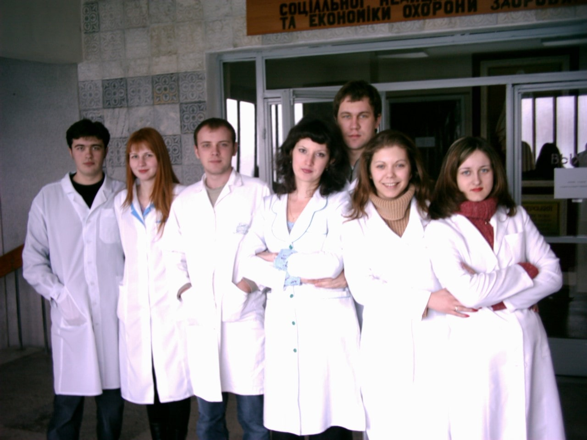
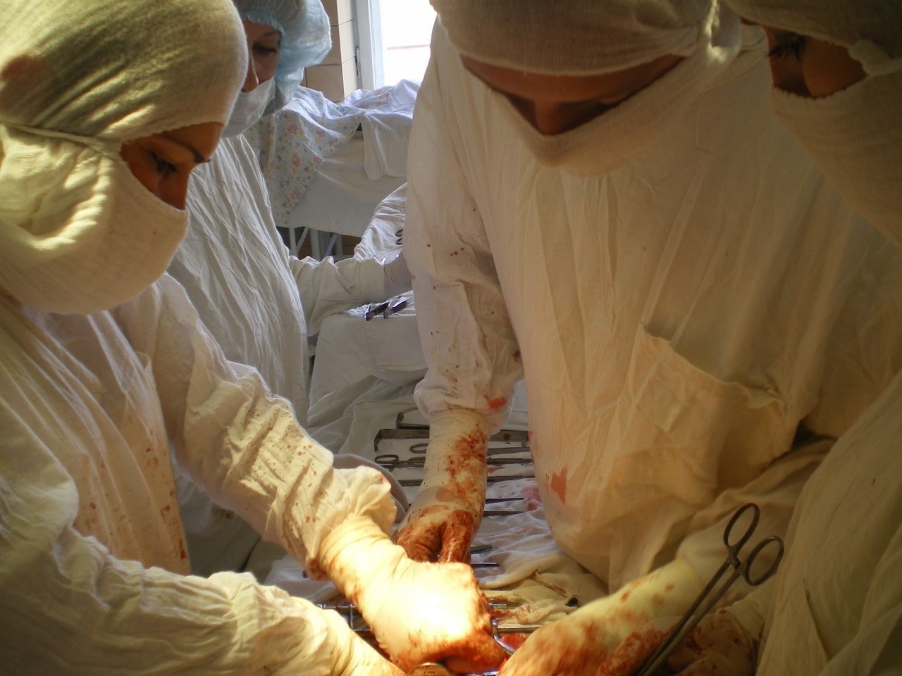

Учеба и карьера

Первое знакомство с медициной началось в 1997 после поступления в Луганский медико-биологического лицей, который окончил в 2000 году. За время обучения в лицее будущий доктор, еще не зная, что свяжет свою жизнь с акушерством и гинекологией, активно изучал биологию и химию. Принимал участие во всеукраинских олимпиадах по химии: в 1998 году в командной олимпиаде занял 5 место, в 1999 - 7 место.
С 2000 по 2006 год учился в Луганском медицинском университете. Во время учебы с 2003 по 2006 год работал в должности медицинской сестры в Луганской областной психоневрологической больнице.
С 2006 по 2009 год прошел интернатуру по акушерству и гинекологии на базе Луганской областной клинической больницы.
В 2008 году, в связи с нехваткой кадров, работал единственным акушером-гинекологом Новоайдарского района Луганской области, выполнял работу районного акушера-гинеколога, одновременно являясь врачом гинекологического и акушерского стационара, ведя амбулаторный прием в поликлинике и работая на ургентной ставке в ночное время.
C 2009 года по 2014 годы работал в должности врача акушера-гинеколога по оказанию неотложной помощи в гинекологическом отделении Луганской городской многопрофильной больницы №2, с 2013 года - ответственным врачом на смене.
C 2010 по 2011 годы дополнительно работал в частной больнице «Медаком» в Луганске, вел амбулаторный прием, занимался ведением беременности, лечением бесплодия, воспалительных процессов малого таза, лечением нарушений менструального цикла.
В 2010 году прошел обучение на курсе ТУ «Эндоскопическая хирургия» на базе Донецкого национального медицинского университета им. М. Горького.
В 2011 году прослушал лекции и сдал зачет по «клинической трансфузиологии и профилактике пострансфузионних осложнений» на базе Луганской областной станции переливания крови.
В 2011 году получил 2 категорию по специальности «акушерство и гинекология».

С 2011 по 2012 годы работал по совместительству в родильном отделении Луганской областной клинической больницы дежурным акушером-гинекологом в ночное время, принимал роды, делал кесарево сечение.
С 2011 по 2014 годы работал в частной клинике «Новые медицинские технологии» в Луганске врачом гинекологического стационара. В клинике овладел эндоскопической специальностью. Начал выполнять лапароскопические, гистероскопические операции.
С 2014 года врач-специалист по специальности «Ультразвуковая диагностика».

Работа и учеба в г. Харькове

С 2014 по 2016 год работал врачом операционного блока в ЭКО центре профессора Феськова А.Н. ®., г. Харьков.
В клинике, кроме хирургического лечения бесплодия, активно занимался лечением эндометриоза тазовых органов и миомы матки. Проводил лапароскопическое удаление узлов тела матки, лапароскопические экстирпации при гигантских миомах матки, занимался хирургической коррекцией опущение тазовых органов и недержание мочи.
В 2015 году прошел обучение на курсе ТУ «Кольпоскопия в диагностике предопухолевых и опухолевых состояний шейки матки» на базе Харьковской медицинской академии последипломного образования.
В 2015 году получил 1 категорию по специальности «акушерство и гинекология».
Работа и учеба в г. Киеве
С 2016 года заведует стационарным отделением оперативных вмешательств медицинского центра «Омега-Киев».
С 2018 года врач-специалист по специальности «Онкогинекология».
С 2019 член ESGE (European Society for Gynaecological Endoscopy).

В 2020 году получил высшую категорию по специальности «акушерство и гинекология»
В сферу профессиональных интересов доктора входит лечение бесплодия, эндометриоза, миомы матки, патологических процессов в полости матки, опущение половых органов и хирургическая коррекция недержания мочи, косметическая пластика половых губ.
Станислав Александрович успешно проводит лапароскопические операции при гигантских фибромиомах, опухолях придатков матки. Проводит лапароскопическое удаление фиброматозных узлов на матке разных размеров и локализаций.
При лечении эндометриоза доктор бережно относится к ткани яичника, удаляет кисты с максимальным сохранением здоровой яичниковой ткани и максимально удаляет распространения эндометриоза по брюшине малого таза.


{kind=link}